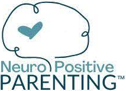
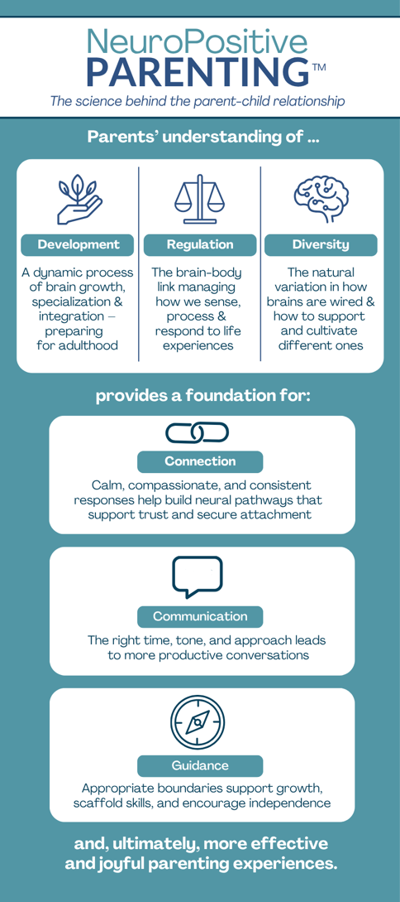

NeuroPositive Parenting™ Coaching

We’ve all heard it – There’s no instruction manual for raising children.
But, what if there was a way to understand your child’s behaviors and work with their system to support growth?
NeuroPositive Parenting™ is a coaching approach that uses concepts from developmental psychology, somatic therapy, and neuroscience to provide parents with knowledge, tools, and strategies for more effective and joyful parenting.
This approach supports caregivers in understanding the "why" behind their child’s behaviors—from toddler tantrums to teen withdrawal. Together, we uncover the patterns, needs, and developmental stages driving your child’s actions, so you can respond with insight instead of overwhelm.
Understanding Brain Development
Demystify behaviors, improve communication, and align with developmental goals
Building a Regulated Nervous System
Recognize and manage nervous system states so you and your child can move from reactivity to regulation
Supporting Diverse Brains
Work with your child’s individual brain to encourage and cultivate their growth
Get specific techniques to
address anxiety, ADHD, and high-functioning ASD
Shift from reacting to connecting—and build a stronger, more secure relationship with your child.